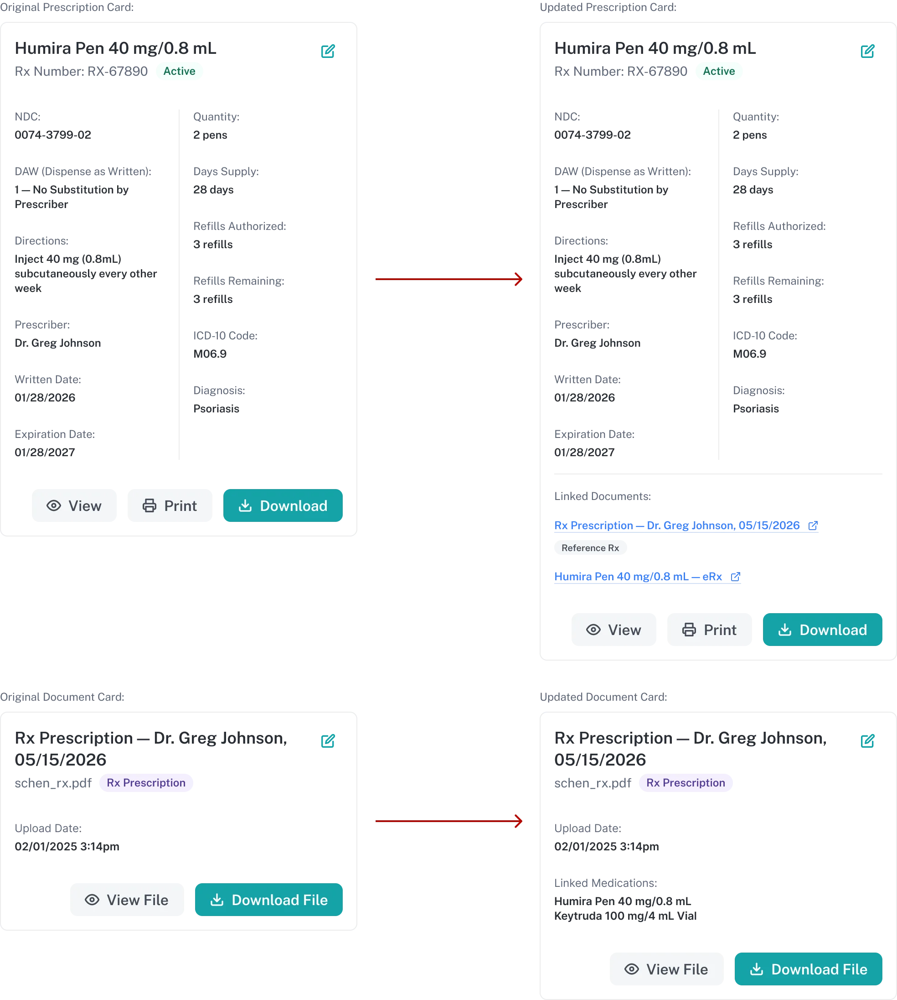
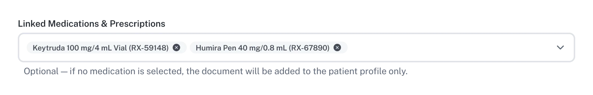
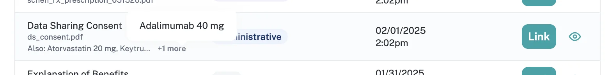
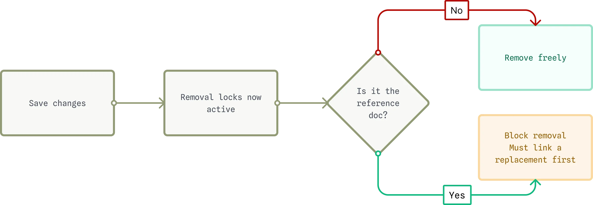

Case study
Solving the Document-Prescription Mismatch
Linking Documents & Prescriptions
I designed Linked Documents to connect prescriptions and medications to the documents that support them, so staff can attach an incoming document to an existing patient record without restarting intake. When more than one document could print, the system knows which one does. I designed the interaction model and its guardrails inside OnePulse Connect's Global Inline Drawer, a panel already in the product and design system that shows a patient's documents and prescriptions during dispensing.
Problem
At Elevate Health Technologies, I worked on OnePulse Connect, its specialty pharmacy platform. During dispensing, staff work across two tabs inside the Global Inline Drawer, one for a patient's documents (authorization letters, EOBs, signed prescriptions, consent forms) and one for prescription info and the medication list, which are different objects with different data behind them. Nothing connected them. Staff reconciled the two by hand.

When a doctor sent an eRx for a patient already in workflow, staff couldn't attach it to the existing record. They had to restart intake from scratch. One document could also need to cover more than one medication, like an authorization letter for two dosage variants of the same drug, and the system had no way to say so. We scoped the fix with the team in a working session on June 5, 2026.
Why This Matters
One staff member works documents from the patient profile instead of an active workflow. She described hunting for an approval letter after the medication had already been dispensed, with no reliable way to find it by medication name. Renaming files "DO NOT USE" was also a common workaround among staff, since the only way to retire a document was to delete it.
Once a document could link to several medications, "Print Prescription" had to resolve to exactly one document, even with several Rx Prescription-type documents on file. Otherwise someone would be guessing which one to print in the middle of dispensing.
From Checkbox List to Two-Zone Dialog
My first version was a flat list with checkboxes, and it didn't work. Three pharmacy staff members struggled with it in testing. Under time pressure, the linking action wasn't explicit enough.
I replaced the checkbox list with a dialog split into two zones. Linked to this Prescription shows whatever's already connected, or an explicit empty state. All Documents is the full list, and clicking Link on any row moves that document into the first zone. I refined the two-zone dialog and its labels across a series of review calls with PMs, the Director of Clinical Pharmacy Innovation, and other stakeholders.
From a prescription, a user opens Linked Documents and connects existing patient documents to it. On the documents side, the upload dialog has an optional Linked Medications & Prescriptions field for tying a new document to one or more medications or prescriptions right away. If nothing's selected, the document still uploads and lands on the patient's profile only.

Table Row, Button, and Alert all came from the system, and I didn't build any new components for this. Later I folded eRx records into the same model as their own document type. That way a prescription received electronically could be linked and replaced the same way as one that came in by fax.
A patient's file could also hold one document, say an authorization letter, that applied to several medications. I added a muted "Also:" line under the filename that lists the other medications it's linked to, and it only appears when that link exists.

I proposed that line live in the first working session, and the team responded to it. No design system pattern covered secondary metadata under a primary label that isn't a filename, so I flagged it as a gap in the system and updated the component to cover it.
Reasoning & Governance
Once "Print Prescription" depended on exactly one reference document, removing that document could leave a prescription with nothing behind it, in a system that dispenses medication. I designed a rule against that before any formal review.

Links stay editable until you save, since nothing is committed yet. After saving, you can't remove the reference document outright. You have to designate a replacement first. If you link a new Rx-type document while another is already the reference, a "Linked Prescriptions Found" alert asks whether to replace it, add the new one alongside it, or cancel. Replacing the reference always requires a reason, like a new Rx, an updated Rx, or a strength change.
The Product Manager and the Director of Clinical Pharmacy Innovation reviewed that logic and didn't change any of it. Clinically, staff never delete patient records, and every prescription keeps a source document attached. The only legitimate reason to fully unlink is a patient-mismatch error, and that gets handled at the patient-record level, outside this dialog. The PM confirmed that the removal lock and reason capture I'd already designed matched that standard.
For marking the reference document, I used an AI assistant to generate candidate patterns and compare them against what the design system already had. I evaluated the options myself, chose a persistent row treatment, and took it further with a left-stroke highlight and a "Reference Rx" tag on a filled star. The star doubles as the toggle and stays visible at all times, so staff don't miss it in a fast-moving workflow.
"Associated Documents" and "+ Associate" tested as unclear, so I proposed "Linked Documents" and "Link," which matched the two-zone interaction. I'd flagged "Primary Rx" early as a placeholder because "primary" implied a ranking. The label needed to say which document prints, and it became "Reference Rx." In my first version I also dimmed already-linked documents in the All Documents list. The team suggested just removing the row once it's linked, and I changed it.
The Design-to-Code Bridge
I built and iterated on this as a working HTML/CSS/JS prototype, with Claude Code writing the code. I wrote the specs, reviewed every change against the design, and made the calls on naming and edge cases.
Each prompt named exactly what should change, down to class names and IDs, and ended with an instruction to leave everything else alone. That kept AI-assisted changes from drifting out of scope without anyone noticing, and it gave me a change log where each prompt maps to one reviewable diff. The Associated-to-Linked rename was the biggest test of that, since it touched visible labels, CSS classes, JS function names, and data properties, and I had to spell out which ones changed and which structural IDs stayed put.
Where It Stood When I Left
I handed this off to engineering, who owned the implementation in OnePulse Connect. When I left, it was in review and on the engineering roadmap, with a guardrail Product and Clinical Pharmacy leadership had already signed off on. I don't know whether it has shipped since.
What's Next
A few things were still open when I handed this off:
- When to require a captured reason on an unlink: later in a workflow, or during early, fluid intake.
- An active/inactive status for documents, so staff can retire one without the "DO NOT USE" workaround.
- Showing the difference between a medication and a prescription in the interface, to match the distinction the data model already makes.
I'd have kept working through all three with the same team.